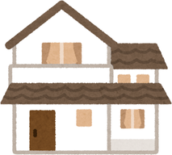

MÓDULO 2
O que aprenderemos nesse módulo?
Nesse módulo, o aluno aprenderá sobre as coisas mais básicas do ASL para se comunicar com alguém, vendo sobre animais, cores, comidas, membros da família e números.
Family Members

1. Introdução e Construção
O objetivo é ampliar o vocabulário relacionado aos membros da família, desenvolvendo associações entre palavras em inglês, imagens e sinais em ASL.
Apresentação do Vocabulário: Introduza Mom, Dad, Brother e Sister, demonstrando seus sinais de maneira clara.
Repetição Guiada: Incentive a criança a observar e reproduzir os sinais, prestando atenção ao posicionamento das mãos.
Associação Familiar: Utilize ilustrações de diferentes composições familiares para contextualizar os termos apresentados.
Reforço Visual: Apresente cartões que relacionem cada membro da família à palavra em inglês e ao sinal correspondente.
2. Consolidação e Prática
Realize atividades de associação entre personagens, palavras e sinais, além de jogos de memória. Incentive a identificação dos membros da família e a construção de associações simples, como "My mom" e "My dad".
Dad / Father
Mom / Mother
Sister
Brother
Foods

1. Introdução e Construção
Nesta etapa, o objetivo é apresentar alimentos comuns em inglês e ASL, relacionando os sinais a imagens e situações do cotidiano.
Apresentação Visual: Introduza Apple, Banana, Milk e Bread, demonstrando seus respectivos sinais.
Repetição Guiada: Incentive a criança a reproduzir cada sinal, observando os movimentos e as configurações das mãos.
Associação Cotidiana: Utilize imagens de refeições e alimentos para contextualizar o vocabulário.
Reforço Visual: Apresente cartões com alimentos, palavras em inglês e sinais correspondentes.
2. Consolidação e Prática
Desenvolva jogos de associação entre alimentos e sinais, atividades de memória e exercícios de identificação visual. Incentive a criança a reconhecer alimentos apresentados em imagens e relacioná-los aos sinais aprendidos.
Milk
Apple
Bread
Banana
House

1. Introdução e Construção
O objetivo é ampliar o vocabulário relacionado aos ambientes e objetos da casa, estabelecendo conexões entre imagens, palavras em inglês e sinais em ASL.
Apresentação Contextualizada: Introduza palavras relacionadas à casa, como House, Bedroom, Kitchen e Bathroom.
Repetição Guiada: Demonstre os sinais correspondentes e incentive a criança a reproduzi-los.
Associação com Ambientes: Utilize ilustrações de diferentes cômodos para facilitar o reconhecimento.
Reforço Visual: Apresente cartões que relacionem cada ambiente ao seu nome em inglês e sinal.
2. Consolidação e Prática
Utilize atividades de identificação de cômodos, jogos de correspondência e exercícios de memória. Incentive a criança a relacionar os ambientes apresentados aos sinais aprendidos, ampliando gradualmente seu vocabulário.
House
Bedroom
Bathroom
Door
Clothes

1. Introdução e Construção
Nesta fase, o objetivo é apresentar peças de vestuário em inglês e ASL, estimulando o reconhecimento visual e a associação com objetos do cotidiano.
Apresentação das Peças: Introduza palavras como Shirt, Pants, Shoes e Dress, demonstrando os sinais correspondentes.
Repetição Guiada: Incentive a criança a reproduzir os sinais, observando seus movimentos.
Associação Visual: Utilize imagens de personagens com diferentes roupas para contextualizar as palavras.
Reforço Visual: Apresente cartões com peças de vestuário, palavras em inglês e sinais em ASL.
2. Consolidação e Prática
Proponha atividades de associação entre roupas e sinais, jogos de identificação e exercícios de escolha da resposta correta. Utilize personagens ilustrados para que a criança reconheça as peças apresentadas e seus respectivos sinais.
Shirt
Pants
Shoes
Socks
Daily Routine
1. Introdução e Construção
O objetivo é apresentar ações comuns do cotidiano em inglês e ASL, desenvolvendo a compreensão de atividades realizadas ao longo do dia.
Apresentações das Ações: Introduza expressões como Wake Up, Eat, Study e Sleep, demonstrando seus sinais.
Repetição Guiada: Incentive a reprodução dos sinais, relacionando cada movimento à ação correspondente.
Associação com Situações: Utilize imagens de crianças realizando atividades diárias.
Reforço Visual: Organize cartões ilustrados que representem diferentes momentos da rotina.
2. Consolidação e Prática
Desenvolva atividades de organização de sequências, associação entre ações e sinais e jogos de memória. Incentive a criança a identificar atividades cotidianas e organizar pequenas sequências utilizando o vocabulário aprendido.
Wake Up
Have Lunch
Play
Go to bed